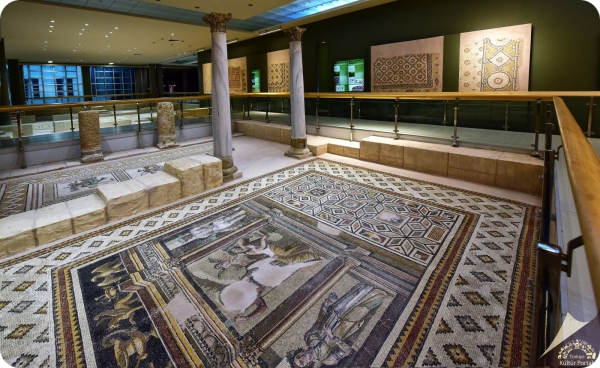

Müze binasının yapımına Mayıs 2011 yılında başlanmıştır. 53,500 metrekare arazi içerisine, oturum alanı 16.000 metrekare olan yapının kapalı alanı 32.754,14 metrekaredir. 10,700 metrekare alan ise sergileme alanı olarak kullanılmaktadır.
Hatay’da yaşam G.Ö. 43.000 ile M.Ö.17.000 yılları arasında Üçağızlı Mağarası’nda başlar. Hatay Arkeoloji Müzesi yeni sergi alanına Samandağ İlçesi, Meydan Köyünde bulunan Üçağızlı mağarası canlandırılması ile girilmektedir.
Büyük İskender’in Hatay’a gelmesi ve sonraki süreçte komutanlarının kurduğu devletlerin eserleri ile sergi devam etmektedir. Bu alanda Sasani, Helenistik ve Selevkos dönemine ait küçük eserler bulunmaktadır. Tykhe Hellenistik dönemden itibaren Antiokheia’nın talih tanrıçasıdır. Roma Döneminde de varlığını sürdüren Tykhe Antiokheia’ya özgü sembollerle tanınmaktadır. Sergide Antiokheia Tykhe’sinin tasvir edildiği heykeller ve sikkeler yer almaktadır. Mitoloji Bölümünde Helenistik ve Roma Döneminde inanılan tanrı-tanrıça ve kahramanların heykelleri sergilenmektedir. Mozaik koleksiyonu açısından dünya birincisi olan Hatay Müzesinde M.S.2-5. yüzyıllar arasına ait mozaikler mimari mekan canlandırmalarıyla birlikte sergilenmektedir.
Büyük İskender’in Hatay’a gelmesi ve sonraki süreçte komutanlarının kurduğu devletlerin eserleri ile sergi devam etmektedir. Bu alanda Sasani, Helenistik ve Selevkos dönemine ait küçük eserler bulunmaktadır. Tykhe Hellenistik dönemden itibaren Antiokheia’nın talih tanrıçasıdır. Roma Döneminde de varlığını sürdüren Tykhe Antiokheia’ya özgü sembollerle tanınmaktadır. Sergide Antiokheia Tykhe’sinin tasvir edildiği heykeller ve sikkeler yer almaktadır. Mitoloji Bölümünde Helenistik ve Roma Döneminde inanılan tanrı-tanrıça ve kahramanların heykelleri sergilenmektedir. Mozaik koleksiyonu açısından dünya birincisi olan Hatay Müzesinde M.S.2-5. yüzyıllar arasına ait mozaikler mimari mekan canlandırmalarıyla birlikte sergilenmektedir.